SitePulse · คู่มือช่าง
วันทดสอบ (D-Day) ลำดับ 4–10
งานของช่างจบที่ขั้น 8 (ออกงาน) — ใช้แค่ LINE · ขั้น 5 / 7 / 9 / 10 เป็นของคนอื่นหรือระบบ · ตรวจงานเป็น Inspector → RPM (เข้าคิวตรวจเมื่อปิดงาน 100% เท่านั้น)
เขียว = ช่างทำเอง (4, 6, 8)
อื่น = Admin / บอท / Inspector / RPM / ผู้บริหาร
● ช่างทำเอง (ถึงขั้นนี้พอ)
- 4
ลงทะเบียนผ่าน LINEชื่อ · Email · เบอร์ · เลือก ML → รออนุมัติ
- 6
เข้างาน (Check-In)เลือกไซต์ · ติ๊กงาน · เปิดนอก LINE ได้ · ตำแหน่ง · % · รูป
- 8
ออกงาน (Check-Out) ← จบงานช่างที่นี่% ตามจริงได้ · ปิด 100% ต้องแนบครบ · ถูกส่งคืนค่อยเข้างานใหม่
○ ที่เหลือ — ไม่ใช่ช่าง
- 5
สร้างกลุ่ม Hub · ผูกไซต์ · อนุมัติช่างAdmin สร้างกลุ่ม+ลากบอท+ติ๊กไซต์ · Admin ML อนุมัติ+ผูกผู้รับเหมา/ทีม · ช่างเข้ากลุ่ม Hub
- 7
แจ้งกลุ่ม + แชทช่างบอทส่ง Check-In/Out ทั้งกลุ่ม Hub และ LINE ส่วนตัวช่าง
- 9
Verify อนุมัติ / ส่งคืนInspector ขั้น 1 → RPM ขั้นสุดท้าย (เว็บ)
- 10
Dashboard / รายงานCBM / ผู้บริหาร (เว็บ)
≡
เริ่มจากเมนูด้านล่าง LINE ช่าง

4
ลงทะเบียนผ่าน LINE ช่างทำ
- พิมพ์ ชื่อ–นามสกุล
- พิมพ์ Email
- พิมพ์ เบอร์โทร 10 หลัก (หรือ - เพื่อข้าม)
- เลือก ภูมิภาค / ML (กดปุ่ม 1–6 หรือพิมพ์เลข)
- ได้การ์ด ลงทะเบียนสำเร็จ — รอ Admin ML อนุมัติ + ผูกผู้รับเหมา/ทีม แล้วเข้ากลุ่ม Hub


5
เตรียมกลุ่ม Hub + อนุมัติช่าง ของ Admin · ช่างรอ/เข้ากลุ่ม
สรุปขั้นตอน Admin
1) สร้างกลุ่ม LINE (Hub) แล้วลาก Bot SitePulse เข้ากลุ่ม
2) เปิดลิงก์ จัดการไซต์ → ติ๊กไซต์ที่ต้องการ → บันทึก (= ผูกไซต์กับกลุ่ม/บอท)
3) อยากลบไซต์ → เข้าหน้าเดิม → เอาติ๊กออก → บันทึก (= ลบออกจากกลุ่ม)
4) บนเว็บ: อนุมัติช่าง + ผูก ผู้รับเหมา / ทีม
5) ให้ช่าง เข้ากลุ่ม LINE ของ Hub ไซต์นั้น เพื่อดูรายละเอียดที่บอทส่ง
1) สร้างกลุ่ม LINE (Hub) แล้วลาก Bot SitePulse เข้ากลุ่ม
2) เปิดลิงก์ จัดการไซต์ → ติ๊กไซต์ที่ต้องการ → บันทึก (= ผูกไซต์กับกลุ่ม/บอท)
3) อยากลบไซต์ → เข้าหน้าเดิม → เอาติ๊กออก → บันทึก (= ลบออกจากกลุ่ม)
4) บนเว็บ: อนุมัติช่าง + ผูก ผู้รับเหมา / ทีม
5) ให้ช่าง เข้ากลุ่ม LINE ของ Hub ไซต์นั้น เพื่อดูรายละเอียดที่บอทส่ง
A สร้างกลุ่ม LINE → ลากบอท → ผูก/ลบไซต์ (หน้าจัดการไซต์)
- สร้าง กลุ่ม LINE สำหรับ Hub / ไซต์นั้น
- ลากหรือเชิญ Bot SitePulse เข้ากลุ่ม
- ในกลุ่ม พิมพ์ เมนู → กด เปิดหน้าจัดการไซต์ (บอทส่งลิงก์)
- ในหน้าเว็บ: กรองผู้รับเหมา/ทีมได้ → ติ๊กไซต์ ที่ต้องการ → กด บันทึก
- ถ้าต้องการลบไซต์ออกจากกลุ่ม: เข้าหน้าจัดการไซต์อีกครั้ง → เอาติ๊กออก → กด บันทึก
ผูกไซต์ทำผ่านหน้าลิงก์ (ติ๊กแล้วบันทึก) — ไม่ต้องพิมพ์รหัสผู้รับเหมาหาบอท · กรองตามผู้รับเหมาในหน้านั้นได้


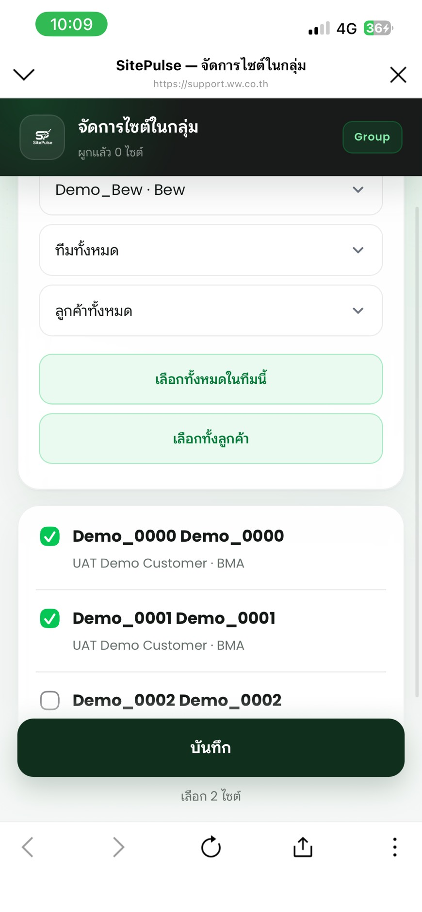
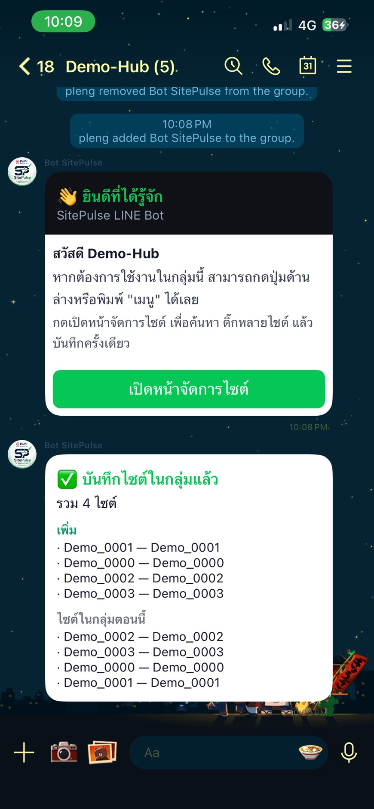
B ช่างลงทะเบียนแล้ว → Admin ML อนุมัติ + ผูกผู้รับเหมา/ทีม (เว็บ)
- ช่างเพิ่มเพื่อน Bot SitePulse แล้วลงทะเบียนใน LINE (ขั้น 4)
- Admin ML เปิดหน้า ช่าง / ผรม. บนเว็บ
- กด อนุมัติ และเลือก ผู้รับเหมา + ทีม ให้ช่าง

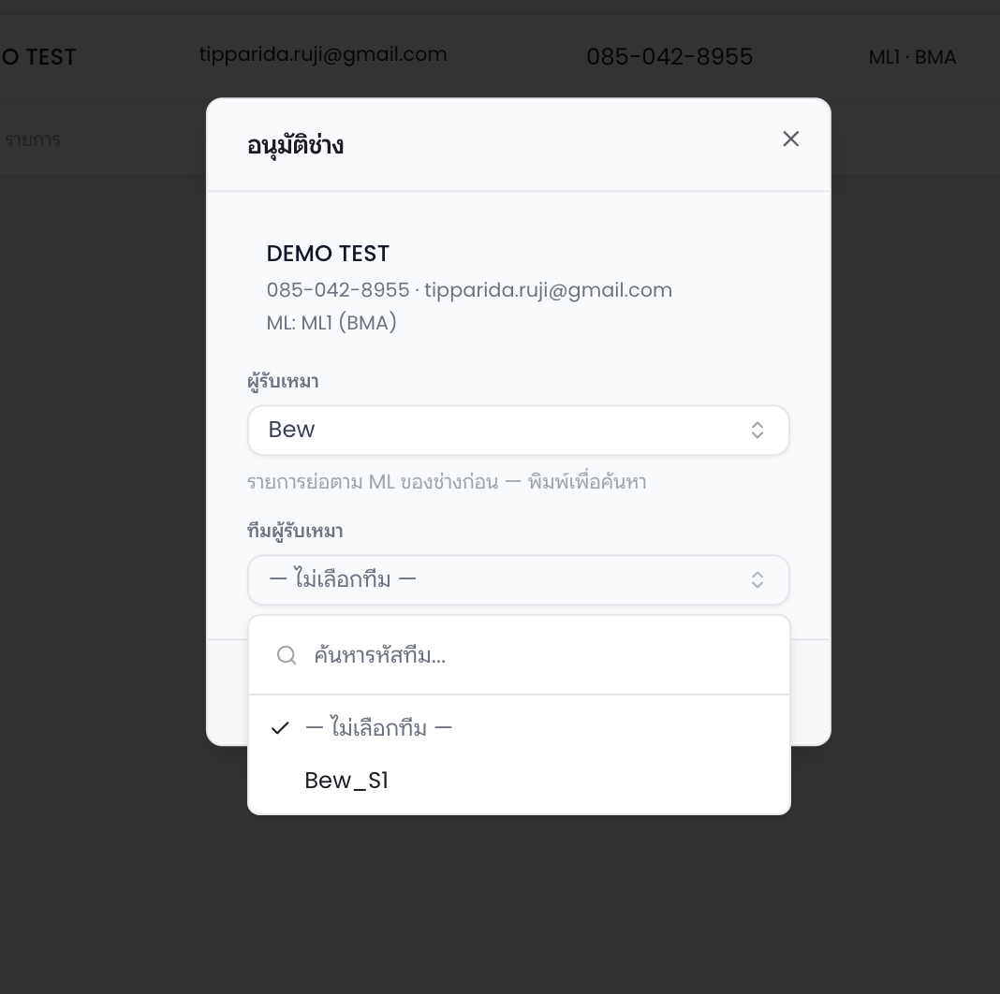
C ช่างเข้ากลุ่ม LINE ของ Hub ไซต์นั้น
- หลังอนุมัติแล้ว ช่างต้อง เข้ากลุ่ม LINE ของ Hub / ไซต์ ที่จะทำงาน
- ในกลุ่มจะเห็นบอทส่งรายละเอียดงาน (Check-In / Check-Out)
- บอทส่ง ทั้งในกลุ่ม Hub และแชทส่วนตัวของช่าง (ตอนเข้างาน/ออกงาน)
หมายเหตุตรวจงาน: ตอน Inspector/RPM ตรวจหรือส่งคืน — ระบบแจ้ง แชทส่วนตัว (DM) เป็นหลัก ไม่โพสต์เข้ากลุ่ม
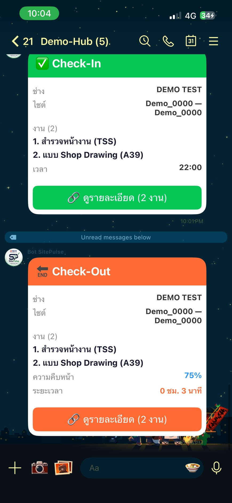
6
Check-In ช่างทำ
A เลือกไซต์ → เปิด Check-In → ติ๊กงาน
- กด Check-In จากเมนูด้านล่าง
- เลือก ไซต์ (ถ้ามีหลายไซต์) → กด เลือก Site นี้
- กด เปิด Check-In (ลิงก์ใช้ได้ 1 ชม. · กดครั้งเดียว)
- ในหน้าเว็บ ติ๊กงานที่จะทำวันนี้ ได้หลายงาน เช่น สำรวจหน้างาน (TSS)
ถ้ายังเข้างานค้างที่ไซต์อื่น — ระบบจะไม่ให้เข้างานไซต์ใหม่ ต้องออกงานไซต์เดิมก่อน

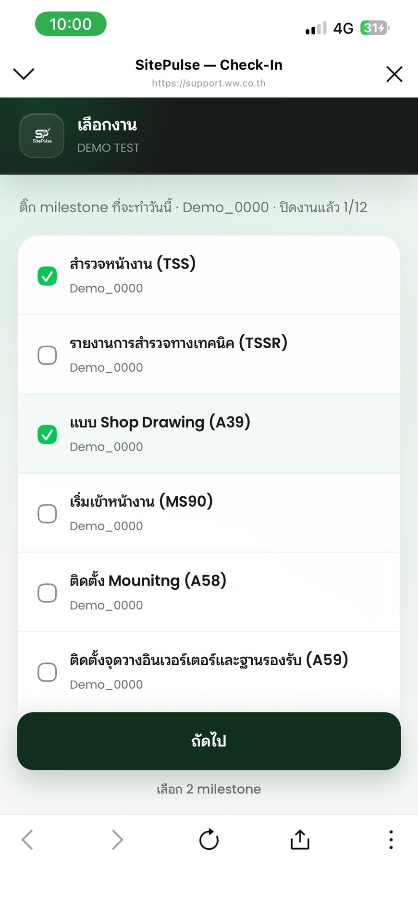
! ถ้ามีงานค้าง ระบบจะแจ้งก่อนเลือกงาน
แถบสีน้ำเงิน = งานค้างของตัวเอง ต้องกลับมาทำต่อ
แถบสีเหลือง = งานที่ช่างคนอื่นเปิดค้างไว้ ติ๊กเฉพาะงานนั้นเมื่อต้องการรับงานต่อ
แถบสีเหลือง = งานที่ช่างคนอื่นเปิดค้างไว้ ติ๊กเฉพาะงานนั้นเมื่อต้องการรับงานต่อ
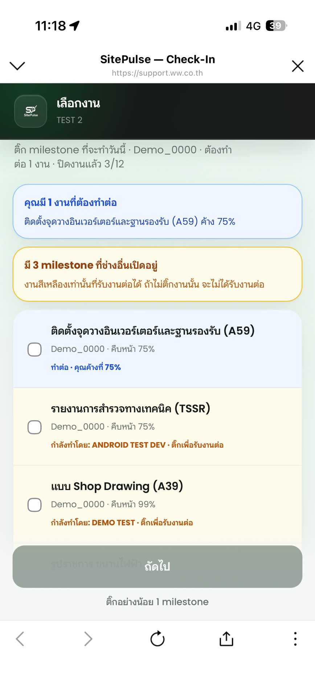
B แนะนำเปิดนอก LINE (GPS / กล้องเสถียรกว่า)
ป๊อปอัปขึ้นตอนเลือกงาน — กด “เปิดในเบราว์เซอร์” จะได้ GPS และกล้องที่เสถียรกว่า ·
หรือกด “ดำเนินการต่อใน LINE” ได้ถ้าจำเป็น · ติ๊กงานในหน้านี้ได้ก่อนเปิดเบราว์เซอร์

C ได้ตำแหน่ง + เลือก % + ถ่ายรูป
ต้องกด Allow เมื่อขอตำแหน่ง / กล้อง — ต้องถ่ายอย่างน้อย 1 รูป (บังคับ ไม่งั้นยืนยันไม่ได้)
เช่น หน้าไซต์ · เครื่องมือ · เครื่องจักร · PPE

D ในรัศมี ✓ / นอก ✗
✓ อยู่ใกล้ไซต์ ≤ 100 ม. → เข้างานสำเร็จ · กลุ่มไซต์ได้รับการแจ้ง
✗ อยู่นอกพื้นที่ → ไม่ผ่าน · ระบบบอกระยะห่าง · เดินเข้าใกล้แล้วลองใหม่


! ลิงก์หมดอายุ
ลิงก์ Check-In / Out ใช้ได้ 1 ชั่วโมง ถ้าหมดอายุ → กลับแชท · พิมพ์ เมนู หรือกด
Check-In ใหม่ · เปิดลิงก์ใหม่ภายใน 1 ชม.

7
แจ้งเตือนกลุ่ม + แชทช่าง ของระบบ/บอท · ช่างไม่กดอะไร
ช่างไม่ต้องกดอะไรเพิ่ม — ดูรายละเอียดใน กลุ่ม Hub และ/หรือ แชทส่วนตัว
หลังออกงานที่ 100% จะเห็นการ์ด งานครบแล้ว · รอ Inspector แล้ว RPM
ถ้า % ยังไม่ถึง 100 แค่บันทึกความคืบหน้า ไม่เข้าคิวตรวจ · ตอนตรวจ/ส่งคืนแจ้ง DM เป็นหลัก
หลังออกงานที่ 100% จะเห็นการ์ด งานครบแล้ว · รอ Inspector แล้ว RPM
ถ้า % ยังไม่ถึง 100 แค่บันทึกความคืบหน้า ไม่เข้าคิวตรวจ · ตอนตรวจ/ส่งคืนแจ้ง DM เป็นหลัก
8
Check-Out ช่างทำ · จบงานช่างที่นี่
- กด Check-Out จากเมนู (หรือพิมพ์ เช็คเอาท์ / checkout) → เปิดหน้าสรุปงานค้าง (hub)
- ดูรายการงานที่เข้างานค้าง · เปิดอัปเดตทีละงานได้
- เลือก % ความคืบหน้าจริง (ไม่จำเป็นต้องเป็น 100% ทุกวัน)
- แนบรูปได้ตามต้องการ · ถ้าปิดงาน 100% ต้องแนบรูป/เอกสารครบตามรายการงาน
- กด ยืนยัน Check-Out
มีเข้างานค้าง ต้องออกงานก่อนถึงจะเข้างานใหม่ได้ · ถ้าค้างที่ไซต์อื่น จะเข้างานไซต์ใหม่ไม่ได้
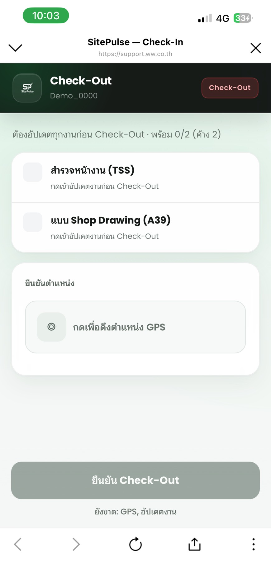
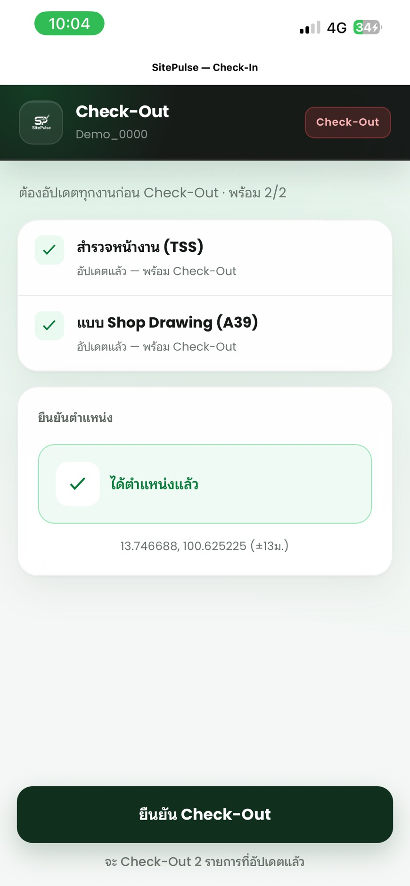
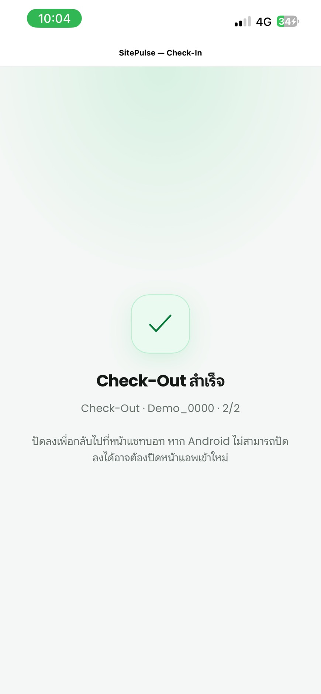

✓ งานของช่างจบที่ขั้น 8 (Check-Out สำเร็จ)
หลังจากนี้ช่างไม่ต้องเข้าเว็บ · ยกเว้นได้รับ “ส่งคืนงาน” ถึงค่อย Check-In ใหม่แก้ตามเหตุผล
ด้านล่างนี้ = คนอื่นทำ (ช่างอ่านเพื่อเข้าใจภาพรวมเท่านั้น)
9
ตรวจงาน — Inspector → RPM ไม่ใช่ช่าง
เจ้าของขั้น: Inspector แล้วตามด้วย RPM (เว็บ)
ช่างไม่เข้าหน้าตรวจงาน · ถ้าถูกส่งคืน จะได้ข้อความใน LINE → เข้างานใหม่เพื่อแก้ แล้วออกงานส่งอีกครั้ง
เหตุผลส่งคืน: รูปไม่ถูก/ไม่ครบ หรือ ติดตั้งผิด · แก้วันเดียวกันหรือวันถัดไปเมื่อกลับไซต์ได้
RPM จะอนุมัติได้ต่อเมื่อ Inspector อนุมัติแล้วเท่านั้น และงานจะถือว่า จบ/ปิดสมบูรณ์ เมื่อทั้ง Inspector และ RPM กดอนุมัติครบแล้ว
RPM ส่งคืนงานไม่ได้ — อนุมัติปิดงานอย่างเดียว
ช่างไม่เข้าหน้าตรวจงาน · ถ้าถูกส่งคืน จะได้ข้อความใน LINE → เข้างานใหม่เพื่อแก้ แล้วออกงานส่งอีกครั้ง
เหตุผลส่งคืน: รูปไม่ถูก/ไม่ครบ หรือ ติดตั้งผิด · แก้วันเดียวกันหรือวันถัดไปเมื่อกลับไซต์ได้
RPM จะอนุมัติได้ต่อเมื่อ Inspector อนุมัติแล้วเท่านั้น และงานจะถือว่า จบ/ปิดสมบูรณ์ เมื่อทั้ง Inspector และ RPM กดอนุมัติครบแล้ว
RPM ส่งคืนงานไม่ได้ — อนุมัติปิดงานอย่างเดียว


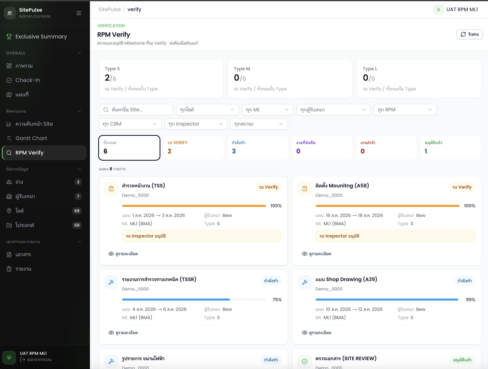
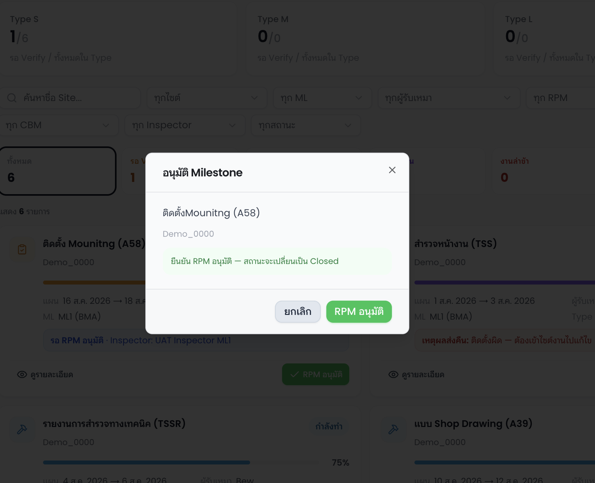

10
ดู Dashboard / รายงาน ของ CBM / ผู้บริหาร · ไม่ใช่ช่าง
เจ้าของขั้น: CBM / ผู้บริหาร (ทีมที่ดูระบบได้)
ช่างไม่ต้องเข้าเว็บรายงาน — ข้อมูลมาจาก Check-In/Out ที่ทำไปแล้ว
ช่างไม่ต้องเข้าเว็บรายงาน — ข้อมูลมาจาก Check-In/Out ที่ทำไปแล้ว